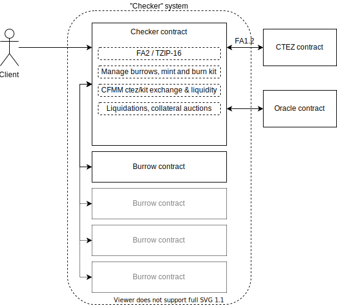

Introduction¶

What is Checker?¶
Checker is a generic piece of software for creating robocoins on the Tezos blockchain. It is an open source project supported by Nomadic Labs, Tweag and TZ Connect Berlin.
A robocoin is a cryptographic token (or “coin”) that tracks an external measure of value, by using various feedback mechanisms to algorithmically control its supply. There is no widely accepted definition of the term, which has been created for the purpose of this document.
While it may have some similarities, Checker’s robocoin mechanism differs from the design of other coin systems which aim to track an external value (such as a currency). Coin designs such as those of the JPM and Facebook’s Libra relied on regulation by a central authority or administrator, which Checker does not require. The Dai stablecoin managed by the MakerDAO project decentralizes its governance, using voting to manage the financial risks of Dai and to ensure its stability: Checker does not require governance by decentralized voting either.
The Checker system eliminates governance by automating the regulation of the robocoin’s value. Specifically, Checker algorithmically controls the coin’s supply by creating incentives for creation and destruction, in order to maintain a smoothed drift of the value of the coin towards that of its external target measure.
Any number of Checker deployments can exist on a Tezos chain, each managing a separate robocoin which tracks a different external measure of value.
System overview of a Checker deployment¶
Checker is a single smart contract which is tied at deployment time to two external contracts:
An oracle contract that will be periodically queried for the value of its external target measure.
The new ctez system, which provides the
cteztoken: this token has a value which tracks that of Tez itself, but without affording the holder any baking rights.
A Checker deployment enables its users to mint and burn its robocoin: Checker manages peripheral “burrow” contracts on those users’ behalf, and places their Tez collateral deposits there.
For users who wish to exchange the robocoin with other commodities, or
who wish to provide liquidity for such exchanges, the deployment
includes a CFMM (Constant Function Market Maker) facility. This allows
an exchange between the robocoin and ctez.
Finally, the deployment allows for liquidation of Tez collateral against which depositors have minted robocoins, to manage when relative prices changes render the collateral insufficient. A batched auction mechanism facilitates this liquidation.
The deployment adjusts the terms for minting, burning and collateralising its robocoin algorithmically based on its current market price and the target oracle feed, such that the price drifts towards the target.
An FA2 interface is provided for each deployment’s robocoin.